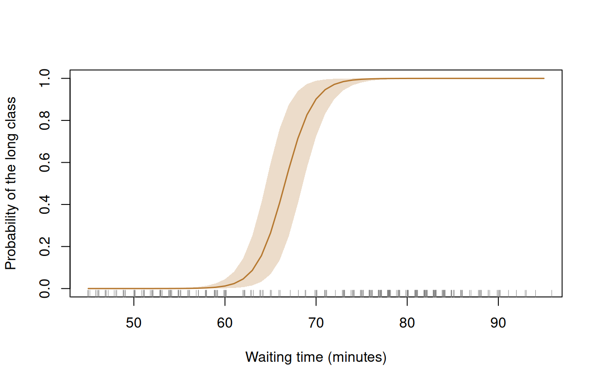
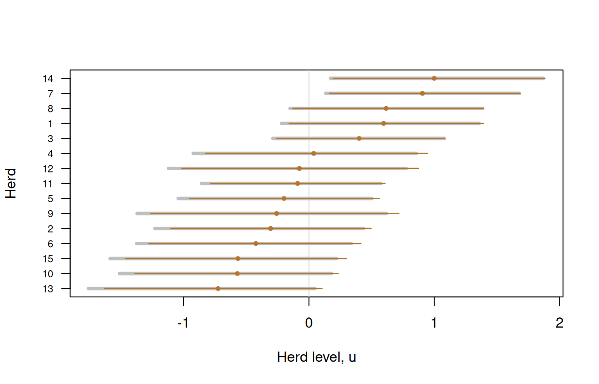

inla_vanilla() fits the parameters \(\theta\) of a model. Its latent variables \(u\) (random effects, factor scores, class memberships) are integrated out inside logpost, so the fit holds nothing about them. They come back afterwards, through
\[ p(u \mid y) = \int p(u \mid \theta, y)\, p(\theta \mid y)\, d\theta. \]
The fit gives \(p(\theta \mid y)\), and the model gives \(p(u \mid \theta, y)\). So a draw of \(\theta\) from the fit, followed by a draw of \(u\) given that \(\theta\), is a draw from the posterior of the latent variables. sampling(fit, fun = ) does exactly this: it draws \(\theta\) and hands each draw to fun, which returns \(u\).
fun is written as logpost is. It receives one draw of \(\theta\) on the scale of logpost, under the names of init, and it returns a numeric vector of the same length every time. What goes inside it depends on what the latent variables are, given the parameters:
| Given \(\theta\), the latent variables are | fun |
|---|---|
| Gaussian, in closed form | draws from that Gaussian |
| discrete | sums over the classes |
| continuous, with no closed form | draws from a grid |
| too many, or too dependent, for a grid | is rtmb_latent(), a Gaussian from RTMB |
Each section below is one row, with a small model.
Gaussian latent variables
The Orthodont data (Potthoff & Roy, 1964) hold a dental distance \(y_{ij}\) for 27 children at ages 8, 10, 12 and 14. Each child \(i\) has their own level:
\[ y_{ij} = \beta_0 + \beta_1 (\text{age}_j - 11) + u_i + \epsilon_{ij}, \qquad u_i \sim N(0, \tau^2), \qquad \epsilon_{ij} \sim N(0, \sigma^2). \]
Integrating out \(u_i\) leaves a normal distribution for each child’s four distances, with covariance \(\sigma^2 I + \tau^2 \mathbf{1}\mathbf{1}^\top\). The priors are \(N(0, 100^2)\) on \(\beta_0\) and \(\beta_1\), and half-normal \(N(0, 10^2)\) on \(\tau\) and \(\sigma\).
Y <- matrix(
Orthodont$distance, ncol = 4, byrow = TRUE,
dimnames = list(unique(as.character(Orthodont$Subject)), NULL)
)
age <- c(8, 10, 12, 14) - 11
# The residuals (one row per child) and the two standard deviations
unpack <- function(theta) {
mu <- theta[["b0"]] + theta[["b1"]] * age
list(
resid = Y - rep(mu, each = nrow(Y)),
tau = exp(theta[["log_tau"]]),
sigma = exp(theta[["log_sigma"]])
)
}
logpost_growth <- function(theta) {
p <- unpack(theta)
total <- p$sigma^2 + 4 * p$tau^2
quad <- rowSums(p$resid^2) - p$tau^2 / total * rowSums(p$resid)^2
loglik <- -0.5 *
(4 * log(2 * pi) + 6 * log(p$sigma) + log(total) + quad / p$sigma^2)
# Half-normal prior on a standard deviation, with the log-Jacobian
lp_sd <- function(s) dnorm(s, 0, 10, log = TRUE) + log(2) + log(s)
sum(loglik) +
sum(dnorm(c(theta[["b0"]], theta[["b1"]]), 0, 100, log = TRUE)) +
lp_sd(p$tau) +
lp_sd(p$sigma)
}
fit_growth <- inla_vanilla(
logpost_growth,
c(b0 = 24, b1 = 0.5, log_tau = 0, log_sigma = 0)
)
#> ✔ Found the posterior mode in 18 iterations [14ms]
#> ✔ VB mean correction, max shift 0.21σ [18ms]
#> ✔ Fitted 4 skew-normal marginals [41ms]
fit_growth
#> ── INLAvanilla 0.1.1.9003 ───────────────────── Skew-normal + one-step VB ──
#>
#> Log marginal likelihood: -241.09 · Converged in 18 iterations (96ms)
#>
#> Mean SD 2.5% 50% 97.5% Mode
#> 1 b0 24.023 0.430 23.179 24.023 24.866 24.023
#> 2 b1 0.6602 0.0616 0.5395 0.6602 0.7808 0.6602
#> 3 tau 2.219 0.360 1.626 2.180 3.035 2.108
#> 4 sigma 1.455 0.117 1.247 1.448 1.708 1.432
#>
#> ℹ Natural scale: tau = exp(log_tau), sigma = exp(log_sigma).Given \(\theta\), the children are independent and each \(u_i\) is Gaussian:
\[ u_i \mid y, \theta \sim N(m_i, v), \qquad v = \left(\frac{1}{\tau^2} + \frac{4}{\sigma^2}\right)^{-1}, \qquad m_i = \frac{v}{\sigma^2} \sum_{j} \left(y_{ij} - \beta_0 - \beta_1 (\text{age}_j - 11)\right). \]
fun is those two formulas and one call of rnorm():
draw_level <- function(theta) {
p <- unpack(theta)
v <- 1 / (1 / p$tau^2 + 4 / p$sigma^2)
m <- v * rowSums(p$resid) / p$sigma^2
m + sqrt(v) * rnorm(length(m))
}
set.seed(1)
u_growth <- sampling(fit_growth, nsamp = 4000, fun = draw_level)
round(head(intervals(u_growth), 4), 2)
#> mean 2.5% 97.5%
#> M01 3.32 1.73 4.87
#> M02 -0.58 -2.13 1.02
#> M03 0.20 -1.42 1.79
#> M04 2.32 0.73 3.88Each row of u_growth is one draw of all 27 levels, so it also answers questions about several children at once, such as the probability that child M01 has a higher level than child M04:
mean(u_growth[, "M01"] > u_growth[, "M04"])
#> [1] 0.85175The article on multilevel models uses this recipe for correlated random intercepts and slopes, and checks it against brms.
Discrete latent variables
A discrete latent variable has no density to draw from, but it has few values, and the model can be evaluated at each of them. The time between eruptions of the Old Faithful geyser (faithful; Azzalini & Bowman, 1990) is short after a short eruption and long after a long one. A mixture of two normal distributions gives each waiting time \(y_i\) a latent class \(c_i\):
\[ y_i \mid c_i = k \sim N(\mu_k, \sigma_k^2), \qquad P(c_i = 2) = \pi, \qquad \mu_2 = \mu_1 + \delta,\ \delta > 0. \]
log_joint() returns \(\log p(y_i, c_i = k \mid \theta)\), one column for each class. logpost sums the two columns on the probability scale, which integrates the class out. The priors are \(N(60, 30^2)\) on \(\mu_1\), half-normal \(N(0, 30^2)\) on \(\delta\), half-normal \(N(0, 20^2)\) on the standard deviations, and uniform on \(\pi\).
wait <- faithful$waiting
log_joint <- function(theta, y) {
mu1 <- theta[["mu1"]]
mu2 <- mu1 + exp(theta[["log_gap"]])
sigma <- exp(c(theta[["log_sigma1"]], theta[["log_sigma2"]]))
p <- plogis(theta[["logit_p"]])
cbind(
log1p(-p) + dnorm(y, mu1, sigma[1], log = TRUE),
log(p) + dnorm(y, mu2, sigma[2], log = TRUE)
)
}
logpost_mix <- function(theta) {
lj <- log_joint(theta, wait)
top <- pmax(lj[, 1], lj[, 2])
gap <- exp(theta[["log_gap"]])
sigma <- exp(c(theta[["log_sigma1"]], theta[["log_sigma2"]]))
p <- plogis(theta[["logit_p"]])
sum(top + log(rowSums(exp(lj - top)))) +
dnorm(theta[["mu1"]], 60, 30, log = TRUE) +
dnorm(gap, 0, 30, log = TRUE) + log(2) + log(gap) +
sum(dnorm(sigma, 0, 20, log = TRUE) + log(2) + log(sigma)) +
log(p) + log1p(-p)
}
fit_mix <- inla_vanilla(
logpost_mix,
c(
mu1 = 55, log_gap = log(25), log_sigma1 = log(6), log_sigma2 = log(6),
logit_p = 0
)
)
#> ✔ Found the posterior mode in 20 iterations [18ms]
#> ✔ VB mean correction, max shift 0.14σ [6ms]
#> ✔ Fitted 5 skew-normal marginals [22ms]
fit_mix
#> ── INLAvanilla 0.1.1.9003 ───────────────────── Skew-normal + one-step VB ──
#>
#> Log marginal likelihood: -1050.49 · Converged in 20 iterations (68ms)
#>
#> Mean SD 2.5% 50% 97.5% Mode
#> 1 mu1 54.649 0.713 53.296 54.633 56.094 54.599
#> 2 gap 25.424 0.765 23.908 25.430 26.911 25.441
#> 3 sigma1 6.015 0.574 5.012 5.972 7.264 5.889
#> 4 sigma2 5.950 0.416 5.208 5.924 6.838 5.873
#> 5 p 0.6381 0.0311 0.5763 0.6384 0.6980 0.6390
#>
#> ℹ Natural scale: gap = exp(log_gap), sigma1 = exp(log_sigma1), sigma2 =
#> exp(log_sigma2), p = plogis(logit_p).Given \(\theta\), the probability of each class is its column of log_joint() on the probability scale, divided by the sum of the two:
\[ P(c_i = 2 \mid y_i, \theta) = \frac{p(y_i, c_i = 2 \mid \theta)} {p(y_i, c_i = 1 \mid \theta) + p(y_i, c_i = 2 \mid \theta)}. \]
fun returns this probability, not a draw of the class. Its average over the draws of \(\theta\) is the posterior probability of the class, with less Monte Carlo error than an average of drawn classes. sampling() passes y on to fun, so the same function classifies waiting times that were never observed:
prob_long <- function(theta, y) {
lj <- log_joint(theta, y)
1 / (1 + exp(lj[, 1] - lj[, 2]))
}
minutes <- 45:95
set.seed(1)
prob <- sampling(fit_mix, nsamp = 4000, fun = prob_long, y = minutes)
band <- apply(prob, 2, quantile, c(0.025, 0.975))
plot(
minutes, colMeans(prob), type = "n", ylim = c(0, 1),
xlab = "Waiting time (minutes)", ylab = "Probability of the long class"
)
polygon(
c(minutes, rev(minutes)), c(band[1, ], rev(band[2, ])),
col = "#B5772E40", border = NA
)
lines(minutes, colMeans(prob), lwd = 1.5, col = "#B5772E")
rug(jitter(wait), col = "grey50")
A waiting time of 67 minutes is about as likely to be of either class, and the band shows how little the data say there. For a draw of the class itself, fun would return rbinom(length(y), 1, prob).
With several binary attributes there is a class for every pattern, and the sum runs over all of them. The article on cognitive diagnostic models classifies examinees over 8 classes in this way.
No closed form
The cbpp data (Lesnoff et al., 2004) count cases of a cattle disease in 15 herds over four periods. Herd \(j\) has \(y_{jt}\) cases among \(n_{jt}\) animals in period \(t\), and its own level on the logit scale:
\[ y_{jt} \sim \operatorname{Binomial}\left(n_{jt},\ \operatorname{logit}^{-1}(\beta_t + u_j)\right), \qquad u_j \sim N(0, \tau^2). \]
Neither the integral over \(u_j\) nor its distribution given \(\theta\) has a closed form. Each herd has one latent variable, though, so both can be computed on a grid.
The integral is the likelihood of herd \(j\), averaged over the prior of its level. We write the level as \(u_j = \tau z_j\), so that \(z_j\) is standard normal, with density \(\phi\), and let \(f_j(z)\) be the likelihood of the herd’s data when \(z_j = z\). Then
\[ p(y_j \mid \theta) = \int f_j(z)\, \phi(z)\, dz \approx \sum_k f_j(z_k)\, \phi(z_k)\, h. \]
The sum is the area under the integrand, cut into strips of width \(h\): the points \(z_k\) run from \(-6\) to \(6\) in steps of \(h = 0.1\), and each strip is as tall as the integrand at its point. herd_loglik() returns \(\log f_j(z_k)\) for every herd and every point. logpost adds \(\log \phi(z_k) + \log h\) to it, and sums over the points on the probability scale. The priors are \(N(0, 5^2)\) on each \(\beta_t\) and half-normal \(N(0, 1)\) on \(\tau\).
herd <- as.integer(cbpp$herd)
period <- as.integer(cbpp$period)
z <- seq(-6, 6, by = 0.1)
# log f_j(z_k): a row per herd, a column per grid point
herd_loglik <- function(theta) {
tau <- exp(theta[["log_tau"]])
eta <- theta[period] + tau * matrix(z, nrow(cbpp), length(z), byrow = TRUE)
rowsum(dbinom(cbpp$incidence, cbpp$size, plogis(eta), log = TRUE), herd)
}
logpost_cbpp <- function(theta) {
l <- sweep(herd_loglik(theta), 2, dnorm(z, log = TRUE) + log(0.1), "+")
top <- apply(l, 1, max)
tau <- exp(theta[["log_tau"]])
sum(top + log(rowSums(exp(l - top)))) +
sum(dnorm(theta[1:4], 0, 5, log = TRUE)) +
dnorm(tau, 0, 1, log = TRUE) + log(2) + log(tau)
}
init <- c(b1 = -1.5, b2 = -2, b3 = -2, b4 = -2, log_tau = log(0.5))
fit_cbpp <- inla_vanilla(logpost_cbpp, init)
#> ✔ Found the posterior mode in 15 iterations [166ms]
#> ✔ VB mean correction, max shift 0.15σ [47ms]
#> ✔ Fitted 5 skew-normal marginals [160ms]
fit_cbpp
#> ── INLAvanilla 0.1.1.9003 ───────────────────── Skew-normal + one-step VB ──
#>
#> Log marginal likelihood: -104.92 · Converged in 15 iterations (386ms)
#>
#> Mean SD 2.5% 50% 97.5% Mode
#> 1 b1 -1.399 0.238 -1.884 -1.393 -0.948 -1.381
#> 2 b2 -2.397 0.316 -3.035 -2.391 -1.796 -2.379
#> 3 b3 -2.539 0.336 -3.221 -2.530 -1.902 -2.514
#> 4 b4 -3.011 0.438 -3.923 -2.993 -2.202 -2.955
#> 5 tau 0.727 0.203 0.393 0.706 1.184 0.665
#>
#> ℹ Natural scale: tau = exp(log_tau).The distribution of \(z_j\) given \(\theta\) comes from the same strips. By Bayes’ theorem its density is the integrand itself, divided by its integral:
\[ p(z_j \mid y_j, \theta) = \frac{f_j(z_j)\, \phi(z_j)}{p(y_j \mid \theta)}. \]
A density gives probabilities as areas, so the probability that \(z_j\) lies in strip \(k\) is that strip’s share of the total area:
\[ P(z_j \text{ in strip } k \mid y_j, \theta) \approx \frac{f_j(z_k)\, \phi(z_k)}{\sum_l f_j(z_l)\, \phi(z_l)}. \]
fun picks a strip for each herd with these probabilities, a uniform draw places \(z_j\) within it, and \(u_j = \tau z_j\):
draw_herd <- function(theta) {
# The height of each strip, up to a constant for each herd
l <- sweep(herd_loglik(theta), 2, dnorm(z, log = TRUE), "+")
w <- exp(l - apply(l, 1, max))
# The running share of the area, and the strip where a uniform draw falls
cdf <- t(apply(w, 1, cumsum)) / rowSums(w)
k <- rowSums(cdf < runif(nrow(w))) + 1
u <- exp(theta[["log_tau"]]) * (z[k] + runif(nrow(w), -0.05, 0.05))
setNames(u, paste("herd", rownames(w)))
}
set.seed(1)
u_grid <- sampling(fit_cbpp, nsamp = 10000, fun = draw_herd)
round(head(intervals(u_grid), 4), 2)
#> mean 2.5% 97.5%
#> herd 1 0.57 -0.22 1.36
#> herd 2 -0.35 -1.23 0.43
#> herd 3 0.39 -0.29 1.08
#> herd 4 -0.01 -0.92 0.86Nothing here is approximated beyond the strips, so these draws are the reference for the next section. A grid works for one or two latent variables per unit. Beyond that its size grows too fast.
With RTMB
RTMB (Kristensen, 2026) takes a different route to the same integral. The model is written with the latent variables in it, as a joint negative log-density of \(\theta\) and \(u\), and random = "u" tells RTMB::MakeADFun() to integrate \(u\) out by a Laplace approximation. Each call of obj$fn(theta) finds the mode of \(u\) given \(\theta\) and the curvature there. That mode and curvature are a Gaussian approximation of \(p(u \mid \theta, y)\), which is what fun needs.
The cbpp model again, with nothing integrated by hand:
nll <- function(p) {
tau <- exp(p$log_tau)
eta <- p$b[period] + p$u[herd]
-sum(RTMB::dbinom_robust(cbpp$incidence, cbpp$size, eta, log = TRUE)) -
sum(RTMB::dnorm(p$u, 0, tau, log = TRUE)) -
sum(RTMB::dnorm(p$b, 0, 5, log = TRUE)) -
(RTMB::dnorm(tau, 0, 1, log = TRUE) + log(2) + p$log_tau)
}
obj <- RTMB::MakeADFun(
nll,
list(b = unname(init[1:4]), log_tau = init[[5]], u = numeric(15)),
random = "u",
silent = TRUE
)
fit_rtmb <- inla_vanilla(
function(theta) -obj$fn(unname(theta)),
init,
grad = function(theta) -as.vector(obj$gr(unname(theta)))
)
#> ✔ Found the posterior mode in 16 iterations [37ms]
#> ✔ VB mean correction, max shift 0.14σ [23ms]
#> ✔ Fitted 5 skew-normal marginals [96ms]
round(rbind(grid = coef(fit_cbpp), RTMB = coef(fit_rtmb)), 3)
#> b1 b2 b3 b4 tau
#> grid -1.399 -2.397 -2.539 -3.011 0.727
#> RTMB -1.399 -2.398 -2.539 -3.011 0.721The two fits agree, so the Laplace approximation of the integral is accurate here. For the latent variables, rtmb_latent() builds fun from the object:
set.seed(1)
u_rtmb <- sampling(fit_rtmb, nsamp = 10000, fun = rtmb_latent(obj))It has nothing of the model in it. It serves any object built with random =, and returns all of its random effects, in the object’s order. At each draw of \(\theta\) it calls obj$fn(), reads the mode from obj$env$last.par and the precision from obj$env$spHess(), and draws from that Gaussian with a sparse Cholesky factor. Written out, with the Matrix package attached:
draw_latent <- function(theta, obj) {
obj$fn(unname(theta))
par <- obj$env$last.par
random <- obj$env$random
# A new matrix each time: Cholesky() keeps its factor in the matrix it is
# given, and RTMB hands back the same matrix at every call
H <- 1 * obj$env$spHess(par, random = TRUE)
ch <- Cholesky(H, perm = TRUE, LDL = FALSE)
# H = P' L L' P, so mode + P' L^-T e has precision H
e <- solve(ch, rnorm(length(random)), system = "Lt")
par[random] + as.vector(solve(ch, e, system = "Pt"))
}Two of these lines are easy to get wrong, and neither fails with an error, which is why the package has the function. Without the copy 1 *, every draw reuses the Cholesky factor of the first. Without the last solve(), which undoes the reordering that Cholesky() applies, the draws have the wrong covariance.
Against the grid of the last section, in grey:
est_grid <- intervals(u_grid)
est_rtmb <- intervals(u_rtmb)
o <- order(est_grid[, 1])
y <- seq_along(o)
plot(
est_grid[o, 1], y, type = "n", xlim = range(est_grid, est_rtmb),
xlab = "Herd level, u", ylab = "Herd", yaxt = "n"
)
axis(2, at = y, labels = o, las = 1, cex.axis = 0.7)
abline(v = 0, col = "grey85")
segments(est_grid[o, 2], y, est_grid[o, 3], y, lwd = 4, col = "grey75")
segments(est_rtmb[o, 2], y, est_rtmb[o, 3], y, lwd = 1.5, col = "#B5772E")
points(est_rtmb[o, 1], y, pch = 19, cex = 0.6, col = "#B5772E")
The Gaussian is close but not exact. Its means are within 0.12 posterior standard deviations of the grid’s. Its lower limits are up to 0.30 standard deviations too high, because a herd with few cases has a longer left tail than a Gaussian allows: the gap averages 0.26 in the herds with the lower case rates and 0.13 in the others. When \(u\) is Gaussian given \(\theta\), as in the growth model, there is no gap at all.
The object need not be the one that was fitted. A model with a closed form is faster to fit without RTMB, as the growth model was. An object built from its joint density, only for this step, goes to rtmb_latent() in the same way, provided the object’s parameters are those of init, in the same order.
RTMB’s precision matrix is sparse, so this route is the one for latent variables that depend on each other in their thousands, as in a spatial or temporal field, where neither a closed form per unit nor a grid applies.
In short
- Gaussian given the parameters. Write the mean and variance, and draw. It is exact.
- Discrete. Evaluate the model at each class and normalise. It is exact, and returning the probability beats drawing the class.
- One or two per unit, not Gaussian. Reuse the grid that integrated them out. It is exact to the grid.
-
Many, or dependent. Write the joint density in RTMB and pass the object to
rtmb_latent(). It is an approximation, and it is at its best when each latent variable has plenty of data.
In every case fun and logpost must describe the same model. Building both on one helper, as unpack(), log_joint() and herd_loglik() are here, keeps them in step.
References
Azzalini, A., & Bowman, A. W. (1990). A look at some data on the Old Faithful geyser. Applied Statistics, 39(3), 357–365. https://doi.org/10.2307/2347385
Kristensen, K. (2026). RTMB: R bindings for TMB (Version 2.0) [Computer software]. https://doi.org/10.32614/CRAN.package.RTMB
Lesnoff, M., Laval, G., Bonnet, P., Abdicho, S., Workalemahu, A., Kifle, D., Peyraud, A., Lancelot, R., & Thiaucourt, F. (2004). Within-herd spread of contagious bovine pleuropneumonia in Ethiopian highlands. Preventive Veterinary Medicine, 64(1), 27–40. https://doi.org/10.1016/j.prevetmed.2004.03.005
Potthoff, R. F., & Roy, S. N. (1964). A generalized multivariate analysis of variance model useful especially for growth curve problems. Biometrika, 51(3–4), 313–326. https://doi.org/10.1093/biomet/51.3-4.313